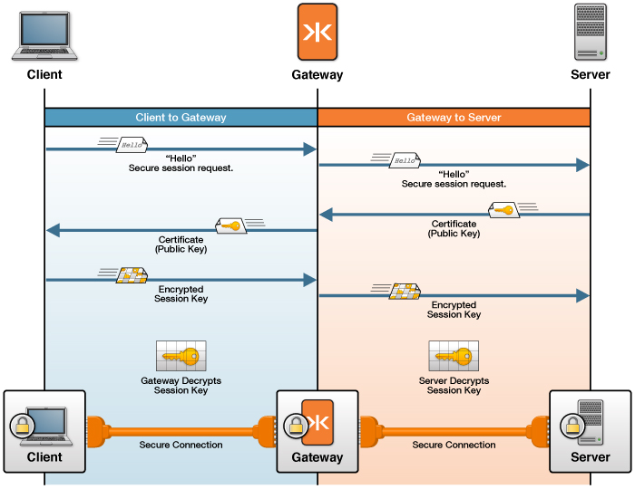

How TLS/SSL Works with the Gateway
You can secure network traffic between Kaazing Gateway and its clients and back-end servers using the widespread networking protocol Transport Layer Security (TLS, also known as SSL). TLS/SSL is the protocol you use when accessing secure websites with a URL that begins with https://. TLS/SSL protects data from modification during transit and verifies its authenticity. WebSocket connections are secured by tunneling through TLS/SSL using the WebSocket Secure (WSS) URL scheme wss://. By securing Gateway communication with TLS/SSL, you protect the confidentiality, integrity, and availability of your network communications.
In addition, configuring the Gateway with TLS/SSL ensures that network intermediaries, such as transparent proxy servers and firewalls that are unaware of WebSocket, do not drop the WebSocket connection. WebSocket uses the same HTTP upgrade method commonly used to upgrade HTTP connections to HTTPS. Intermediaries unfamiliar with WebSocket might drop the unfamiliar WebSocket upgrade as a security precaution, preventing the WebSocket connection. When using the WSS connection over TLS/SSL, however, intermediaries trust the connection and allow it to pass.
Important:
- Always use TLS/SSL with the Gateway unless you can confirm that all intermediaries support WebSocket.
- TLS/SSL requires that a separate secure session be established for each hop (gateway) in the network path. Consequently, you must configure separate TLS/SSL connections between the client and the Gateway and the back-end server and the Gateway. You use a separate certificate for each connection. You can choose to configure one or both secure connections. See the following figure for an example of the separate secure sessions established with the Gateway.

Figure: The Gateway Uses one TLS/SSL Certificate to Secure Network Traffic With Clients and a Separate TLS/SSL Certificate to Secure Network Traffic With Back-end Servers
If you are new to network security and TLS/SSL, see Transport Layer Security (TLS/SSL) Concepts.
Common Configurations with the Gateway
The following two TLS/SSL configurations are the most common with the Gateway, and the focus of this guide:
- Secure the Gateway Using Trusted Certificates. Follow the steps in this scenario if you currently have a Public Key Infrastructure (PKI) in your corporate network or if you use PKI over the Internet. You will use your existing PKI Certificate Authorities to issue, verify, and revoke the trusted certificates used by clients, the Gateway, and back-end servers.
-
Secure the Gateway Using Self-Signed Certificates. Follow the steps in this scenario if you do not use a PKI and want to test secure networking with the Gateway and ensure that WebSocket connections are not dropped by intermediaries when developing applications. You will create and use self-signed certificates to create a limited trust relationship between your clients, the Gateway, and your back-end servers.
Warning: Using self-signed certificates can result in unpredictable behavior because various browsers, plug-ins, operating systems, and related run-time systems handle self-signed certificates differently. Resulting issues may include connectivity failures and other security issues which can be difficult to diagnose. Instead, use trusted certificates issued from a trusted certificate authority (CA) for real-world development, test, and production environments.
Before you perform the steps in either scenario, review Components and Tools and TLS/SSL with the Gateway Example, to learn how to:
- Configure the Gateway to accept secure, TLS/SSL connections from clients and browsers.
- Configure the Gateway to establish secure connections with TLS/SSL-enabled back-end systems.
Notes:
- You are not required to configure TLS/SSL for both the client and back-end server connections to the Gateway. For example, you can choose to configure the client to Gateway connection over WSS and leave the Gateway to back-end server connection using TCP.
- Using self-signed certificates is not recommended for any business deployment of the Gateway because TLS/SSL is designed for use within a trusted PKI.
- When using self-signed certificates, web browser clients must navigate to the Gateway over HTTPS to receive and accept the self-signed certificate manually before a WebSocket Secure (WSS) connection with the Gateway can be made. You can work around this limitation by importing the self-signed certificate into the client web browser using the browser’s certificate importing functionality. For more information, see Secure Clients and Web Browsers with a Self-Signed Certificate.
- There is no security warning when using trusted certificates with a web browser. When a web browser loads a web page that contains a WSS object (via HTTP or HTTPS), the web browser validates the certificate in the background and if the certificate is valid the connection proceeds without notifying the user.
- If you have set up the Gateway behind an SSL offloader, where traffic in front of the SSL offloader is secure over HTTPS and traffic behind the SSL offloader to the Gateway is not secure, you can disable encryption so that the connection can occur. For more information, see ssl.encryption element in the Service Reference documentation.
Components and Tools
Before you get started, review the components and tools used to configure TLS/SSL with the Gateway, described in the following table:
| Component | Description |
|---|---|
The Gateway and its configuration file (gateway-config.xml) |
You will configure the Gateway configuration file (GATEWAY_HOME/conf/gateway-config.xml) for secure networking between the Gateway and clients and the Gateway and back-end servers. For more information on gateway-config.xml, see About Kaazing Gateway Configuration Files. |
| host names | Each certificate you use for secure networking is created for use with a specific host name. The certificate used for the client connection to the Gateway uses the host name of the Gateway, and the certificate used for the back-end server connection uses the host name of the back-end server. These host names must be resolvable using DNS. |
| public keys | The certificates used by a client to establish trust with the Gateway, or by the Gateway to establish trust with a back-end server. The certificates contain the public keys needed for encrypting data. |
| private keys | The private keys used by the Gateway to decrypt data sent from clients, and by the back-end servers to decrypt data sent by the Gateway. |
| certificates | Two certificates are used for secure networking with the Gateway: one certificate for the client-to-Gateway connection, and one certificate for the Gateway-to-back-end server connection. |
| keystore (for example, keystore.db) | Contains the certificates presented to clients by the Gateway when clients connect to the Gateway over TLS/SSL. These are the certificates trusted by the clients. The file is located in the GATEWAY_HOME/conf folder. |
| keystore password (for example, keystore.pw) | The password used by the Gateway to access the keystore is stored in this file, located in the GATEWAY_HOME/conf folder. |
| truststore (for example, truststore.db) | Contains the certificates used by the Gateway when the Gateway is acting as a client of back-end servers. These are the certificates trusted by the Gateway. This file is located in the GATEWAY_HOME/conf folder. |
| keytool | The command-line tool used to create, list, import, and export certificates for use with the Gateway. The Java keytool utility is part of your Java installation and is located in the Java bin directory. For example, C:\Program Files\Java\jre6\bin (Windows) or /Library/Java/home/bin (Mac OS X). |
| clients (web browsers and client applications) | The client-side user agents that participate in secure networking with the Gateway, including web browsers and client applications using HTTPS and WSS. |
| back-end servers | The back-end servers that participate in secure networking with the Gateway. |
TLS/SSL with the Gateway Example
The following is an overview of what happens under-the-hood when TLS/SSL is used for a Gateway proxy connection between a client and a back-end server, and when TLS/SSL is enabled on both the Gateway and the back-end server:
- The client connects to the Gateway using the secure URL
wss://example.com:9000/. - The Gateway accepts the WSS URL as part of its proxy configuration and looks in its
gateway-config.xmlfile for the keystore file that contains the certificate for example.com (and the keystore’s corresponding password file). The Gateway gets the certificate (containing the public key) for example.com and sends it to the client. - The client verifies and accepts the Gateway digital certificate for example.com. The TLS/SSL handshake occurs, and the client is in secure communication with the Gateway using WSS. The client uses the same certificate for future connections until the certificate expires.
- The Gateway prepares to connect to the back-end server using the connect URL
ssl://offline.example.com:61617. - The Gateway checks its truststore to see if it has a trusted certificate for offline.example.com.
- The Gateway verifies the certificate for offline.example.com (for example, examines its expiry date), connects to the back-end server using the certificate and the TLS/SSL handshake between the Gateway and back-end server occurs. The Gateway uses the same certificate for future connections until the certificate expires.
- The Gateway establishes a secure connection with the back-end server over TLS/SSL. Secure networking is now established between the client and the Gateway over WSS and the Gateway and the back-end server over TLS/SSL. All network traffic is transmitted securely.